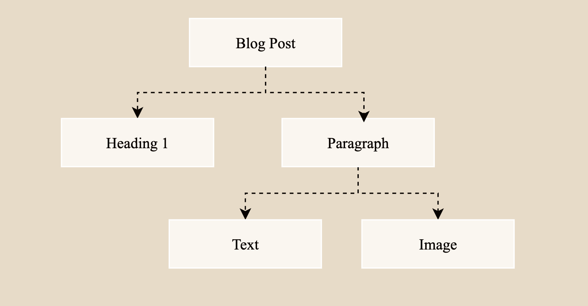

Building A Compiler In A Weekend (Static Site Generator)
Preface
Compilers always have been a domain in software I find quite fascinating. Compilers tend to come across novel problems, which are very satisfying to explore & solve. Due to their nature they tend to have special demands for performance, which invites you to actually think about the kind of algorithms you are using and finally they give you space to make A LOT of small design decisions, thus sharpening your creativity and problem solving skills. After having written my own compiler for the lox language I find myself reading about compilers from time to time or even skim around the internals of some open source compilers (e.g. the Odin Compiler). One particular weekend I found myself with some free time and itchy fingers to code. After wanting to update my personal site for a while, I immediately knew that I wanted to program an SSG. This post is meant to give a small overview over compilers aswell as document the process of creating my own ssg from scratch.
The Anatomy of a Compiler
A compilers components can generally be classified in two categories: frontend and backend. A compilers frontend is concerned with the source language while the backend deals with the target machine(s).
This splitting enables us to mix and match frontends and backends, the most widely known example of this is the LLVM Backend which many popular programming languages like Rust & Swift target with their language specific frontend.
This coupling usually gets achieved by a so called Intermediate Representation which is a representation of our source code, which will then get processed by the compiler backend to finally produce code, which will run on a physical or virtual machine.
So if you wanted to write a compiler for your own programming language and use the LLVM Backend to generate machine code, you would typically write the compilers frontend to transform your source code into the LLVM Intermediate Representation and pass this on to the LLVM backend.
Great resources to get deeper into compiler internals are the Crafting Interpreters - and the Dragon Book.
Compiler Frontend
In the example of our little SSG our frontend has two distinct tasks: First we need to scan the .md files we wish to compile and extract "tokens" from them. Tokens are units of text that carry special meaning in our source language. In a programming language tokens would be things like keywords (e.g. function, var, ..), identifiers, literals etc. In the case of an ssg we e.g. have Heading1-5, Quotes, Code-Blocks, Images, Links and so on.
The second thing our frontend takes care of is bringing these tokens into logical structures or "trees", the professional term for this is "Abstract Syntax Tree" (AST). The following image does a great job of showcasing why we use the term tree aswell as show how an AST might look like in the case of a blog post compiled by my ssg.

The data structure I've chose for this is a struct with a type distinction and a union for the different types of data an element might carry:
struct Element {
Element_Type type;
union {
Meta_Data meta;
Text_Element text;
Code_Block code;
Image image;
Link link;
Paragraph paragraph;
} data;
};
For the subset of markdown elements I want to support paragraphs are the only special ones which require actual AST generation since they may require child elements (a paragraph can contain links or images while a link typically does not contain any further child elements).
struct Paragraph {
Element *children;
int count;
};
So the high level parse function looks like this:
Element* parse(char *source, int *out_count) {
parser = Parser{
.current = source,
.elements = (Element *)malloc(INITIAL_CAPACITY * sizeof(Element)),
.capacity = INITIAL_CAPACITY,
.count = 0,
};
while (*parser.current != '\0') {
skip_whitespace();
if (*parser.current == '\0')
break;
char c = advance();
switch (c) {
case '#':
heading();
break;
case '`':
code();
break;
case '-':
metadata();
break;
case '!':
image();
break;
default:
paragraph();
break;
}
}
*out_count = parser.count;
return parser.elements;
}
Each type of element has its own function which pushes an Element struct to the parser.elements array.
Once the parser has done its job we are ready to take our array of Elements and pass it to our backend.
Compiler Backend
The backend of a compiler can either be incredibly complex or incredibly simple. The compiler backend can perform a giant amount of optimizations and work to produce the most efficient machine code it can, in the case of my ssg the tasks for the backend are rather simple; Emit the corresponding html element from a given .md element.
The main code emit looks somewhat like this:
for (int i = 0; i < count; i++) {
switch (elements[i].type) {
case HEADING_ONE:
out += " <h1>";
out.append(elements[i].data.text.txt, elements[i].data.text.length);
out += "</h1>\n";
break;
case HEADING_TWO:
out += " <h2>";
out.append(elements[i].data.text.txt, elements[i].data.text.length);
out += "</h2>\n";
break;
...
case IMAGE: {
const Image &img = elements[i].data.image;
out += " <img src=\"../assets/";
out.append(img.src, img.src_len);
out += "\" alt=\"";
out.append(img.alt_txt, img.alt_len);
out += "\"";
if (img.title_len > 0) {
out += " title=\"";
out.append(img.title, img.title_len);
out += "\"";
}
out += " />\n";
assets[asset_count++] = std::string(img.src, img.src_len);
break;
}
case VIDEO: {
const Image &v = elements[i].data.image;
out += " <video autoplay loop muted playsinline";
if (v.title_len > 0) {
out += " poster=\"../assets/";
out.append(v.title, v.title_len);
out += "\"";
}
out += ">\n <source src=\"../assets/";
out.append(v.src, v.src_len);
out += "\" type=\"video/";
out += (v.src_len >= 5 && strncmp(v.src + v.src_len - 5, ".webm", 5) == 0)
? "webm"
: "mp4";
out += "\">\n </video>\n";
assets[asset_count++] = std::string(v.src, v.src_len);
break;
}
And that already is the quintessence of the entire ssg. It has to do some more ssg specific work, such as keeping track of referenced assets and copying them to the compile destination along with style sheets etc. But the entire program is rather small and sits at under 1k LoC at the point of writing this.
Outro
If you have a personal website and truly wanna make it your own (and have some interest in compilers), I highly recommend you to write your own ssg. Also I want to encourage you to have fun with it, its your own software after all, you can add whatever features your heart desires to it. One addition I've added, which brings me joy is tracking the compile time of each blog page and attaching this little performance info to the footer of a blog post.
(You can also just scroll down to see this)
This project can be fairly small scoped, and let you experience compiler internals in a beginner-friendly way. The result is quite satisfying to achieve if I may say so myself. Happy Coding everyone!